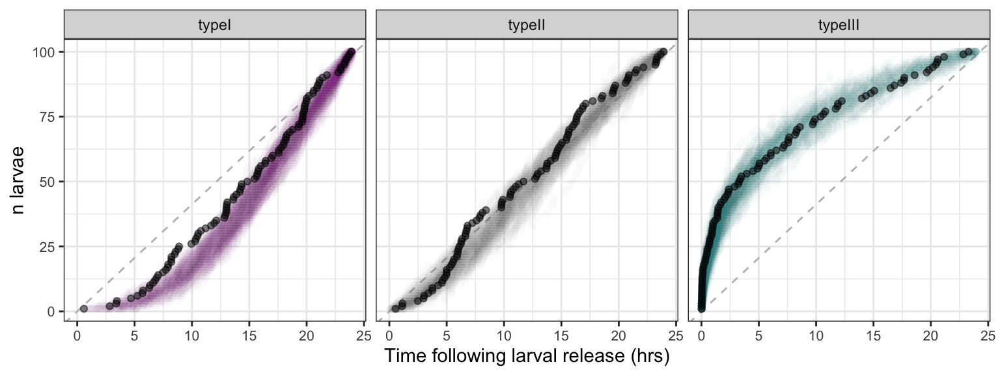
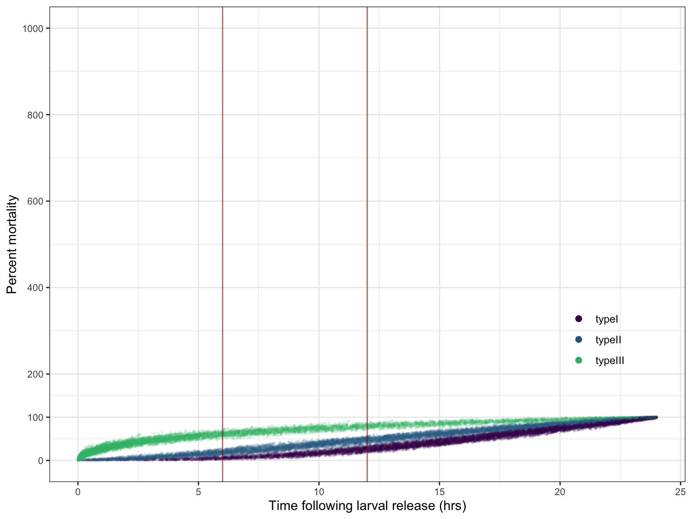

coralseed incorporates an additional parameter for
mortality in early dispersal/settlement stages. While the
time-to-competency models don’t explicitly include a mortality
component, they do account for null settlement (presumably due a lack of
fitness) in individuals that remain uncompetent by the end time point.
The additional mortality component in coralseed accounts
for exogenous sources of mortality otherwise unaccounted for in
dispersal or larval development - for example planktivory or
entanglement.
Due to a complete lack of data on these factors,
coralseed fits age-specific mortality curves with three
generalised forms:
Type I survivorship: high age-specific survival probability in early and middle dispersal, followed by a increasing mortality and rapid decline in survival in late stage dispersal.
Type II survivorship: constant mortality through time with a fixed probability of survival
Type III survivorship: high mortality in early stages with low rates of mortality and high probability of survival in late stage dispersal.
Type I survival is consistent with higher mortality in late stage dispersal which simulates increasing planktivory as larvae disperse across habitats in the water column. Type III mortality is consistent with higher mortality in early stages pre-dispersal, which is consistent with higher entrapment in algal turfs or local-planktivory above reef habitats.
Mortality is parameterised as the proportion of larvae removed in a 24hr period, where 1 = 100% mortality over a 24hr period, and 0.01 = 1% mortality over a 24hr period. To simulate survival curves, mortality is parameterised following a weibull distribution with a fixed scale and varying shape parameters (0, 1.5, 2.5). For example, for n = 0.1 for a cohort of 1000 individual larvae gives the following survival curves over a 24h period:
n_mortality=100
typeI_time <- survivorship_type(n_mortality, 2.5, 1440)
typeII_time <- survivorship_type(n_mortality, 1.5, 1440)
typeIII_time <- survivorship_type(n_mortality, 0.5, 1440)
survivorship_loop <- NULL
for (i in 1:(n_mortality)) {
# Fit the types to the individuals and sample the time of death
typeI_time <- survivorship_type(n_mortality, 2.5, 1440)
typeII_time <- survivorship_type(n_mortality, 1.5, 1440)
typeIII_time <- survivorship_type(n_mortality, 0.5, 1440)
# Combine into a data frame
loop_results <- data.frame(
type = rep(c("typeI", "typeII", "typeIII"), each = n_mortality),
time = c(typeI_time, typeII_time, typeIII_time)
) |>
dplyr::group_by(type) |>
dplyr::arrange(type, time) |>
dplyr::ungroup() |>
dplyr::mutate(n = rep(seq(1, n_mortality, 1), 3))
survivorship_loop[[i]] <- loop_results |> mutate(loop=as.factor(i))
}
survivorship_loop <- do.call(rbind, survivorship_loop)
survivorship_singlesim <- survivorship_loop |> group_by(loop) |> filter(loop==1)
ggplot2::ggplot() + facet_wrap(~type) +
ggplot2::geom_abline(intercept = 0, slope = 4.12, linetype="dashed", color="grey") +
ggplot2::theme_bw() + xlab("Time following larval release (hrs)") + ylab("n larvae") +
ggplot2::geom_point(data = survivorship_loop, ggplot2::aes(x = time/60, y = n, color = as.factor(type)), show.legend=FALSE, size = 1.5, alpha = 0.01) +
ggplot2::geom_point(data = survivorship_singlesim, ggplot2::aes(x = time/60, y = n), color="black", size = 1.5, alpha = 0.5) +
ggplot2::scale_color_manual(values = viridis::viridis(n = 5)[-5]) +
ggplot2::guides(color = ggplot2::guide_legend(override.aes = list(alpha = 1.0, size = 2))) +
ggplot2::theme(legend.position = c(0.86,0.3), legend.title = element_blank(), legend.background = element_blank(),
legend.key = element_blank(), axis.text.x = element_text(size = 8), axis.text.y = element_text(size = 8))
The background coloured points represent n=100 simulations of the same
distribution with randomised subsets (see code for details). As shape
and scale parameters are not intuitive to set, the current version of
coralseed keeps mortality fixed as the three survival curve
types, but can easily be changed to accept variable parameters or
different distributions.
The above curves represent 0.1 or 10% mortality of a cohort of 1000 individuals over 24hrs. Viewed as a whole cohort, mortality curves look like this (vertical red lines = 6hr and 12hr time slices). Note that mortality is fit prior to settlement, so accounts for additional parameterisation of exogenous mortality - ontop of existing mortality in the incompetent component of the time-to-competency models (i.e. larvae that never made it to settlement in experiments due to mortality or lack of fitness).
ggplot2::ggplot() +
ggplot2::theme_bw() + xlab("Time following larval release (hrs)") + ylab("Percent mortality") +
ggplot2::geom_point(data = survivorship_loop, ggplot2::aes(x = time/60, y = n, color = as.factor(type)), size = 0.5, alpha = 0.1) +
ggplot2::scale_color_manual(values = viridis::viridis(n = 4)[-4]) +
ggplot2::guides(color = ggplot2::guide_legend(override.aes = list(alpha = 1.0, size = 2))) +
ggplot2::theme(legend.position = c(0.86,0.3), legend.title = element_blank(), legend.background = element_blank(),
legend.key = element_blank(), axis.text.x = element_text(size = 8), axis.text.y = element_text(size = 8)) +
ggplot2::geom_vline(xintercept=6, alpha=0.6, linewidth=0.5, colour="darkred") +
ggplot2::geom_vline(xintercept=12, alpha=0.6, linewidth=0.5, colour="darkred") +
ggplot2::scale_y_continuous(breaks=c(0,100,seq(200,1000,200)), limits=c(0,1000))